PUSCH NO: 2 - CC8062
Benchmarks Apps Home Geocaching Stats
The Evolution of USGS Benchmarks
USGS NOGLS Datum
Here is a list of benchmarks that I have personally recovered that are still there.
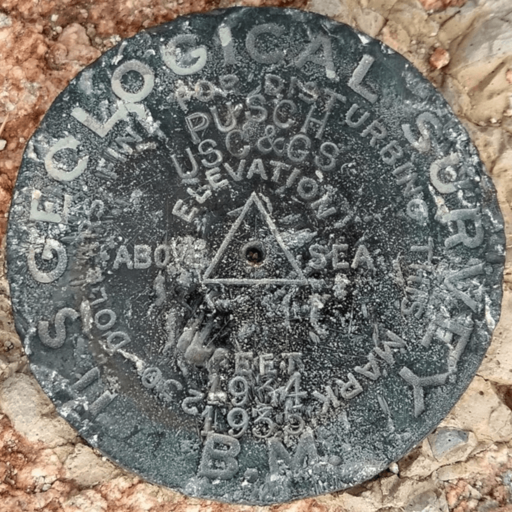
PUSCH - CZ1865
"PUSCH" is a benchmark monumented by the USGS in 1903 located in Pima County, Arizona. It has 2 reference marks, 1 of which has been destroyed, and a non-dedicated azimuth, which has been destroyed.
PUSCH NO: 2 - CC8062
"PUSCH NO: 2" is a benchmark monumented by the USC&GS in 1935 located in Pima County, Arizona. It is a deticated reference mark for PUSCH.
"SOTOL" is a benchmark monumented by the USGS in 1946 located in Pinal County, Arizona. It has 2 reference marks, one being deticated and the other not being deticated.

NOGLS 4503 RESET - CC8280
"NOGLS 4503 RESET" is a benchmark monumented by the USGS in 1946 located in Pinal County, Arizona. It is a non deticated reference mark for SOTOL.

PA 2 - CZ1835
"PA 2" is a benchmark originally monumented by the USC&GS in 1959 and remonumented in 1973 located in Pima County, Arizona. It has 3 reference marks and a non-dedicated azimuth.

PA 2 NO 1 - CC7928
"PA 2 NO 1" is a benchmark monumented by the USC&GS in 1959 located in Pima County, Arizona. It is a deticated reference mark for PA 2.
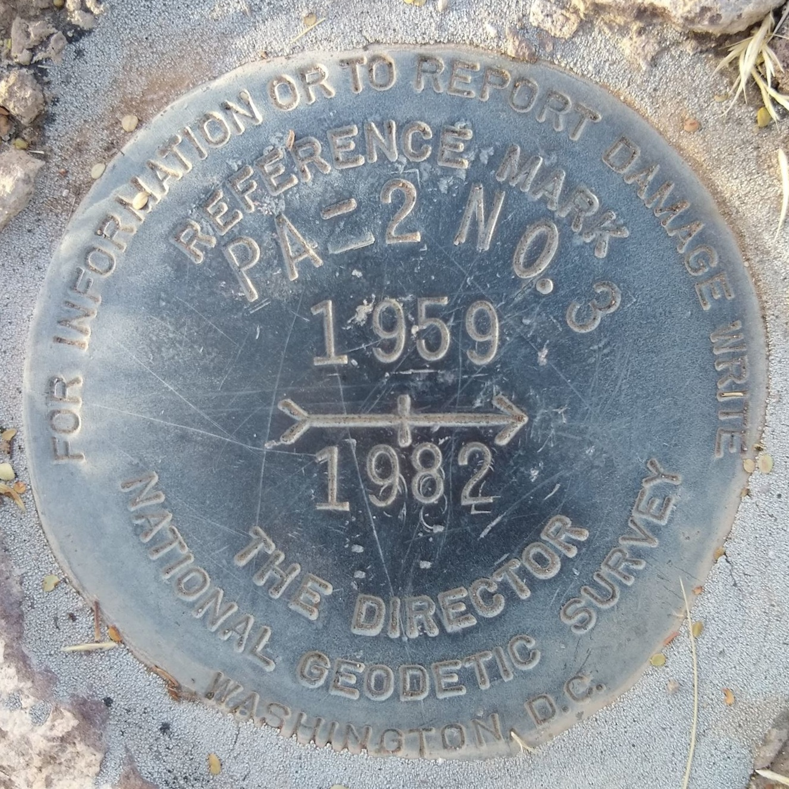
PA 2 NO 3 - CR8310
"PA 2 NO. 3" is a benchmark monumented by the USC&GS in 1982 located in Pima County, Arizona. It is a deticated reference mark for PA 2.
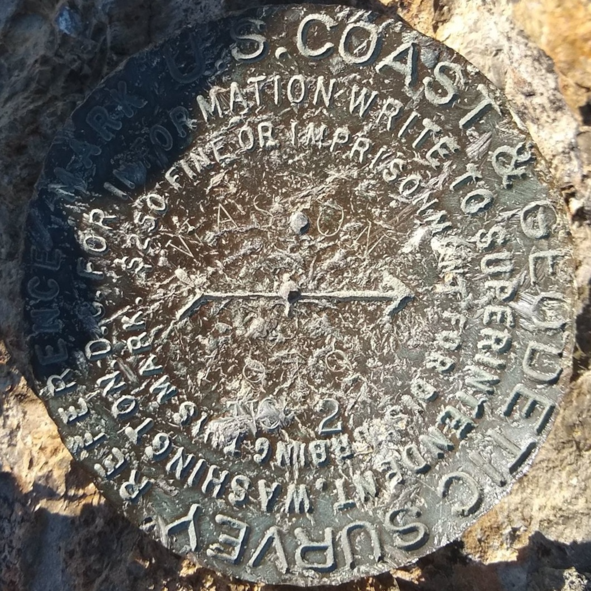
WASSON NO 2 - CH5703
"WASSON NO 2" is a benchmark monumented by the USC&GS in 1919 located in Pima County, Arizona. It is a deticated reference mark for WASSON, which has been destroyed.

WASSON AZI NO. 3 - CH5701
"WASSON AZI NO. 3" is a benchmark monumented by the USC&GS in 1935 located in Pima County, Arizona. It is a deticated azimuth mark for WASSON, which has been destroyed.

MAGNETIC AZIMTUH NO: 3 - CZ2410
"MAGNETIC AZIMUTH NO: 3" is a benchmark monumented by the USC&GS in 1935 located in Pima County, Arizona. It is a deticated azimuth mark for MAGNETIC, which has been destroyed.

TUCSON CAMERA - CZ1829
"TUCSON CAMERA" is a benchmark monumented by the USAFGS in 1964 located in Pima County, Arizona.
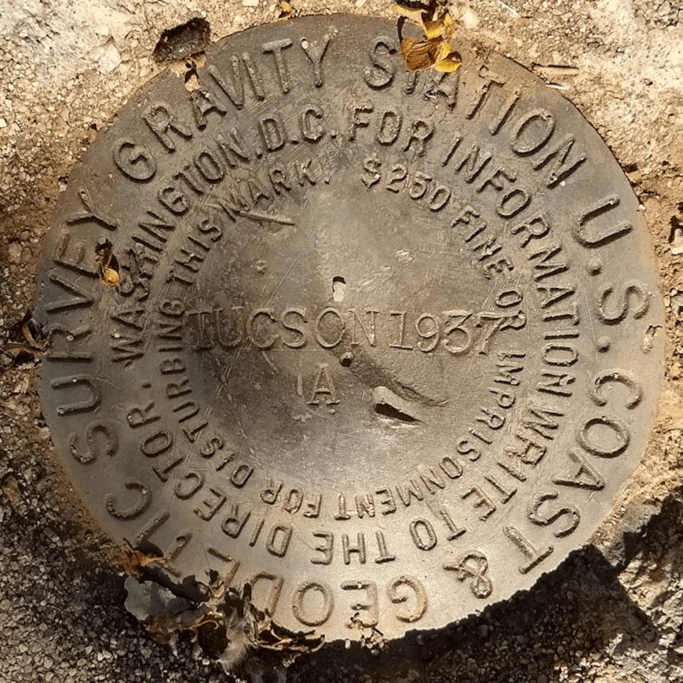
TUCSON A - DE5827
"TUCSON A" is a benchmark monumented by the USC&GS in 1937 located in Pima County, Arizona. It is right next to "TUCSON B".

TUCSON B - DE5834
"TUCSON B" is a benchmark monumented by the USC&GS in 1937 located in Pima County, Arizona. It is right next to "TUCSON A".
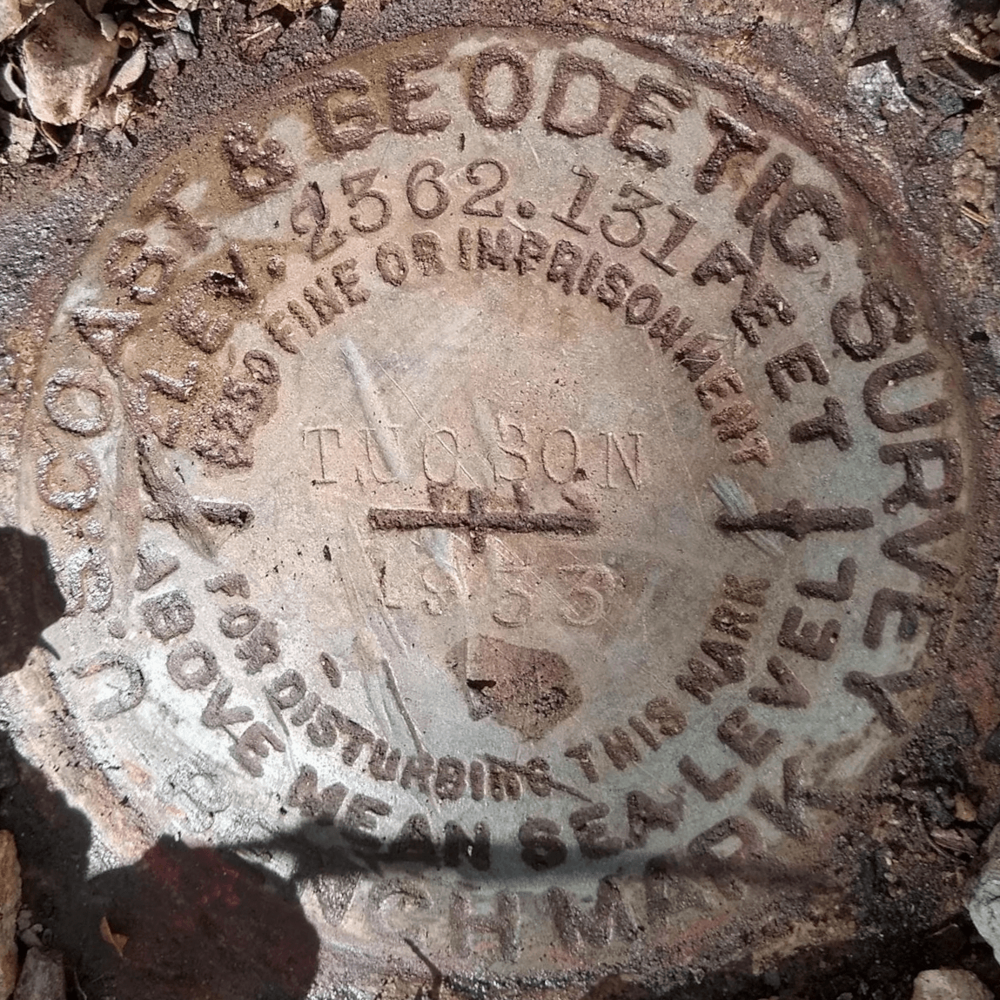
TUCSON - CZ0276
"TUCSON A" is a benchmark monumented by the USC&GS in 1933 located in Pima County, Arizona.
"ORO" is a benchmark monumented by the USC&GS in 1962 located in Pima County, Arizona. It has 2 deticated reference marks and a non deticated azimuth, which has been destroyed.
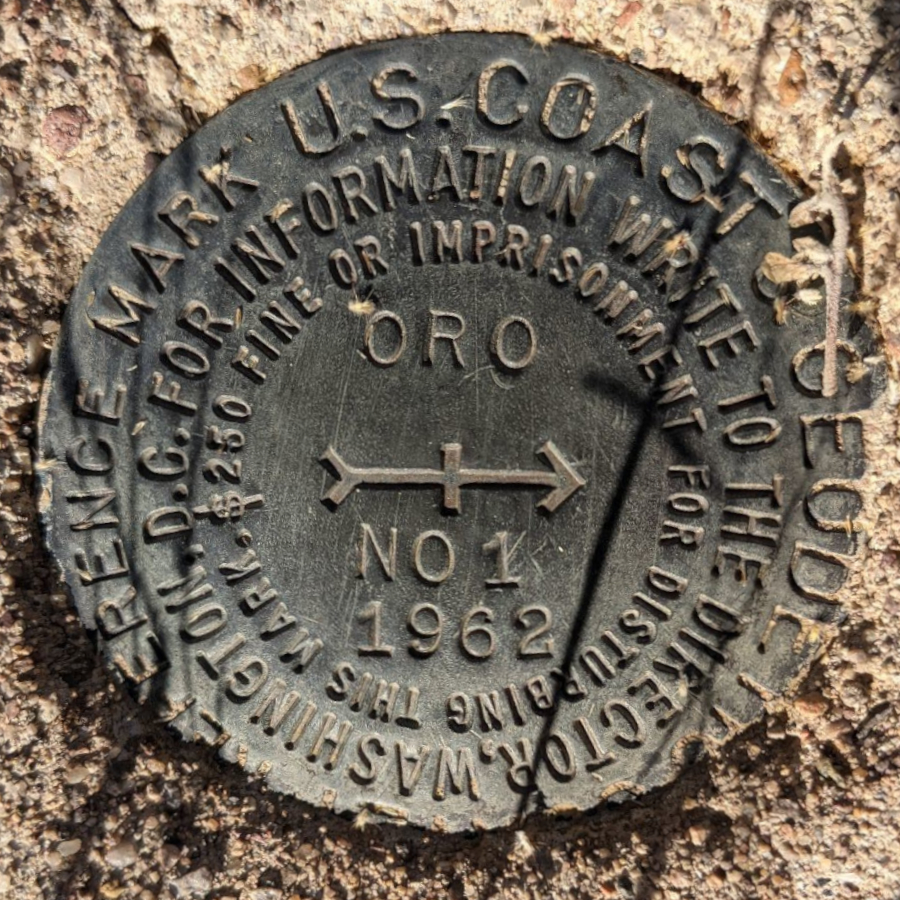
ORO NO 1 - CZ0119
"ORO NO 1" is a benchmark monumented by the USC&GS in 1962 located in Pima County, Arizona. It is a deticated reference mark for ORO.
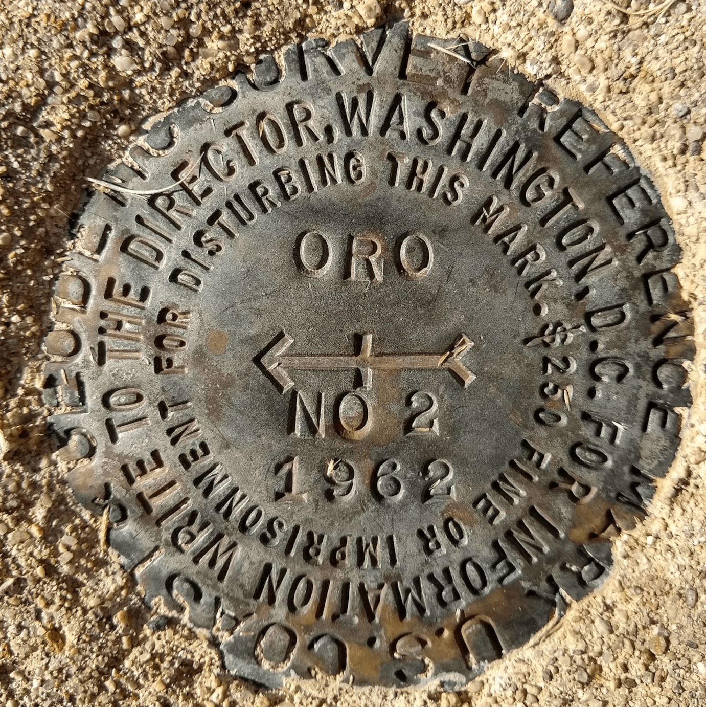
ORO NO 2 - CZ0120
"ORO NO 2" is a benchmark monumented by the USC&GS in 1962 located in Pima County, Arizona. It is a deticated reference mark for ORO.

DEL - CZ1693
"DEL" is a benchmark monumented by the USC&GS in 1962 located in Pima County, Arizona. It has 2 deticated reference marks and a non deticated-azimuth, which has been destroyed.
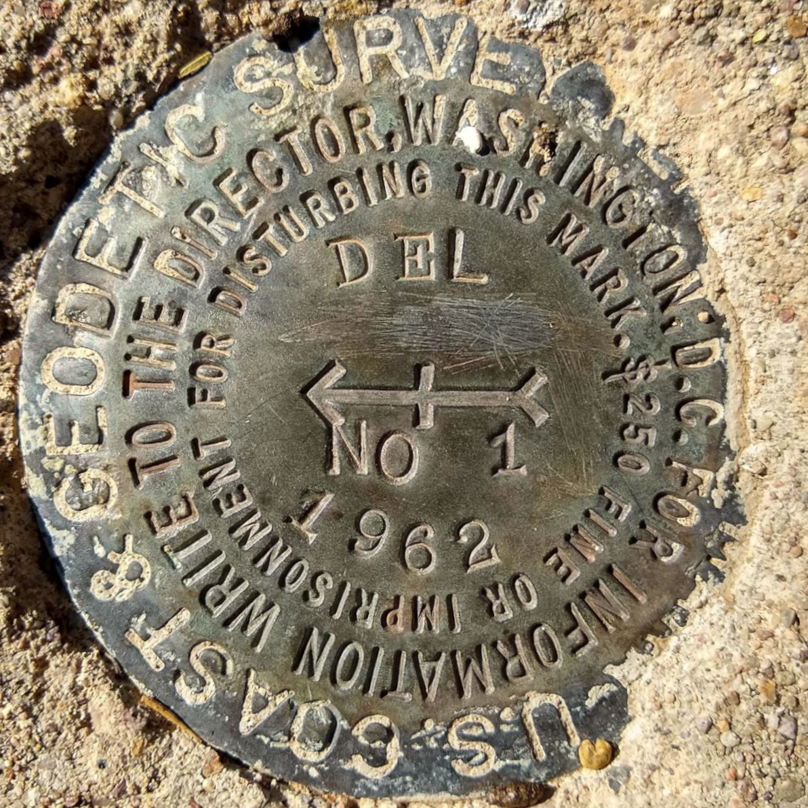
DEL NO 1 - CZ1694
"DEL NO 1" is a benchmark monumented by the USC&GS in 1962 located in Pima County, Arizona. It is a deticated reference mark for DEL.
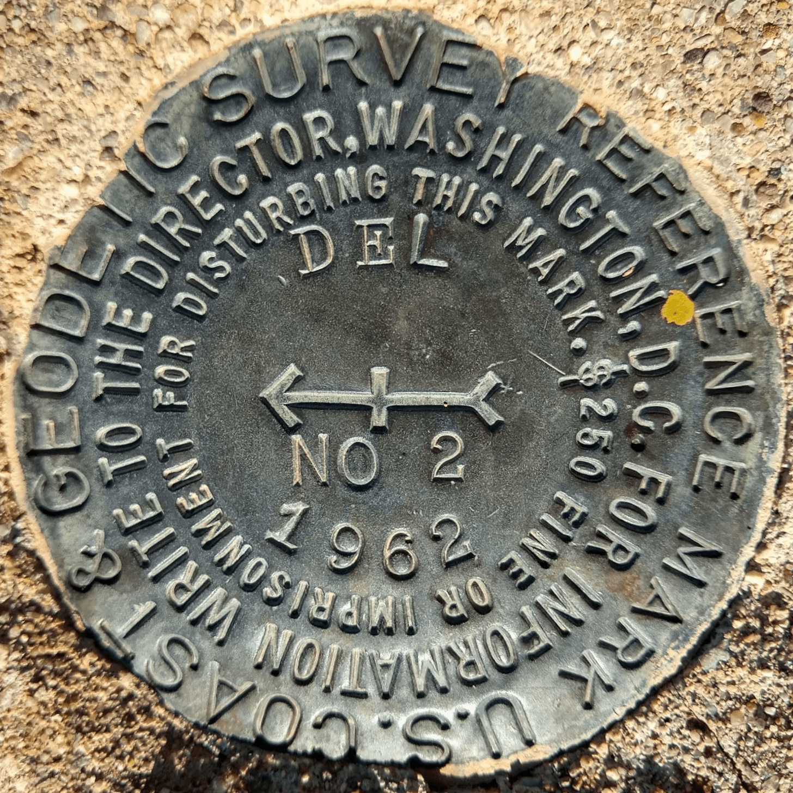
DEL NO 2 - CZ1692
"DEL NO 2" is a benchmark monumented by the USC&GS in 1962 located in Pima County, Arizona. It is a deticated reference mark for DEL.

COMSTOCK - CG0960
"COMSTOCK" is a benchmark monumented by the USC&GS in 1946 located in Cochise County, Arizona. It has 2 deticated reference marks and two deticated azimuth marks, one of which is inaccessable.

COMSTOCK NO 1 - CC7187
"COMSTOCK NO 1" is a benchmark monumented by the USC&GS in 1946 located in Cochise County, Arizona. It is a deticated reference mark for COMSTOCK.
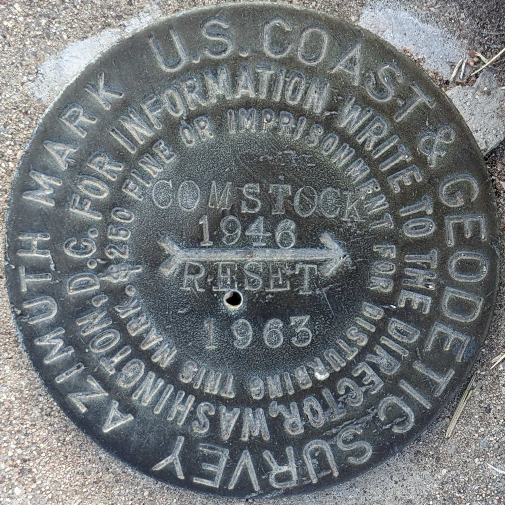
COMSTOCK RESET - CC7186
"COMSTOCK RESET" is a benchmark monumented by the ADOT in 1963 located in Cochise County, Arizona. It is a deticated azimuth mark for COMSTOCK.

Comstock Hill
"Comstock Hill" is a benchmark monumented by the USGS in 1903 located in Cochise County, Arizona.

SANTA - CZ1648
"SANTA" is a benchmark monumented by the USC&GS in 1962 located in Pinal County, Arizona. It has 2 deticated reference marks.
"SANTA NO 1" is a benchmark monumented by the USC&GS in 1962 located in Pinal County, Arizona. It is a deticated reference mark for SANTA.

SANTA NO 2 - CZ1650
"SANTA NO 2" is a benchmark monumented by the USC&GS in 1962 located in Pinal County, Arizona. It is a deticated reference mark for SANTA.
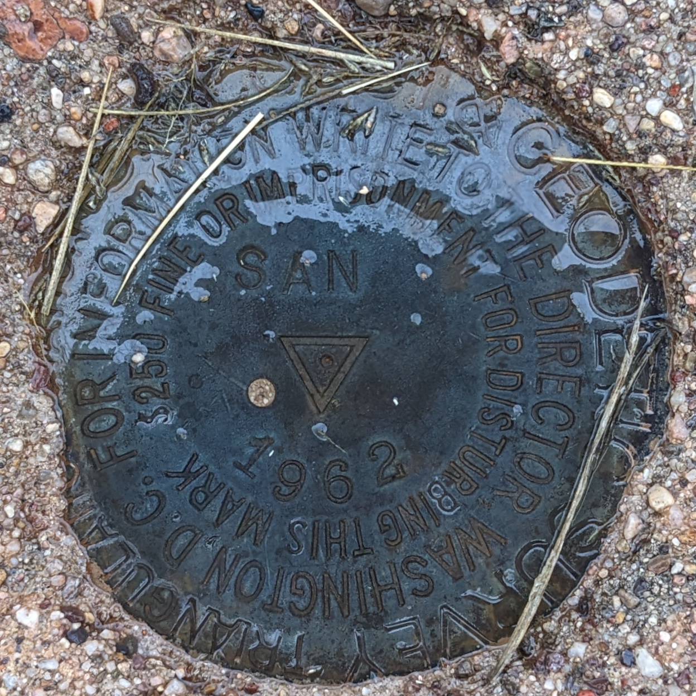
SAN - CZ1644
"SAN" is a benchmark monumented by the USC&GS in 1962 located in Pinal County, Arizona. It has 2 deticated reference marks.
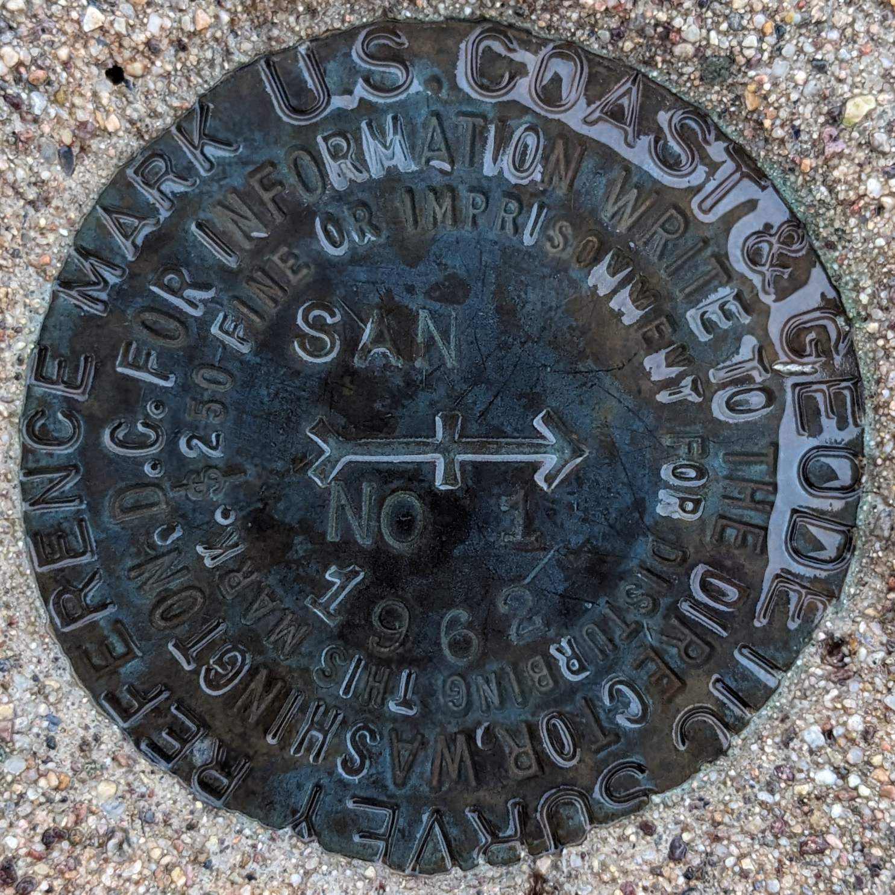
SAN NO 1 - CZ1645
"SAN NO 1" is a benchmark monumented by the USC&GS in 1962 located in Pinal County, Arizona. It is a deticated reference mark for SAN.
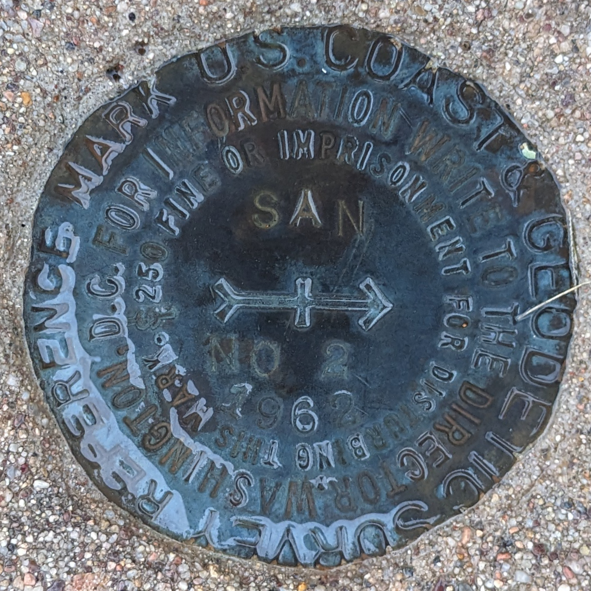
SAN NO 2 - CZ1646
"SAN NO 2" is a benchmark monumented by the USC&GS in 1962 located in Pinal County, Arizona. It is a deticated reference mark for SAN.

STRONG NO 1 - DV0653
STRONG NO 1" is a benchmark monumented by the USC&GS in 1962 located in Maricopa County, Arizona. It is a deticated reference mark for STRONG.
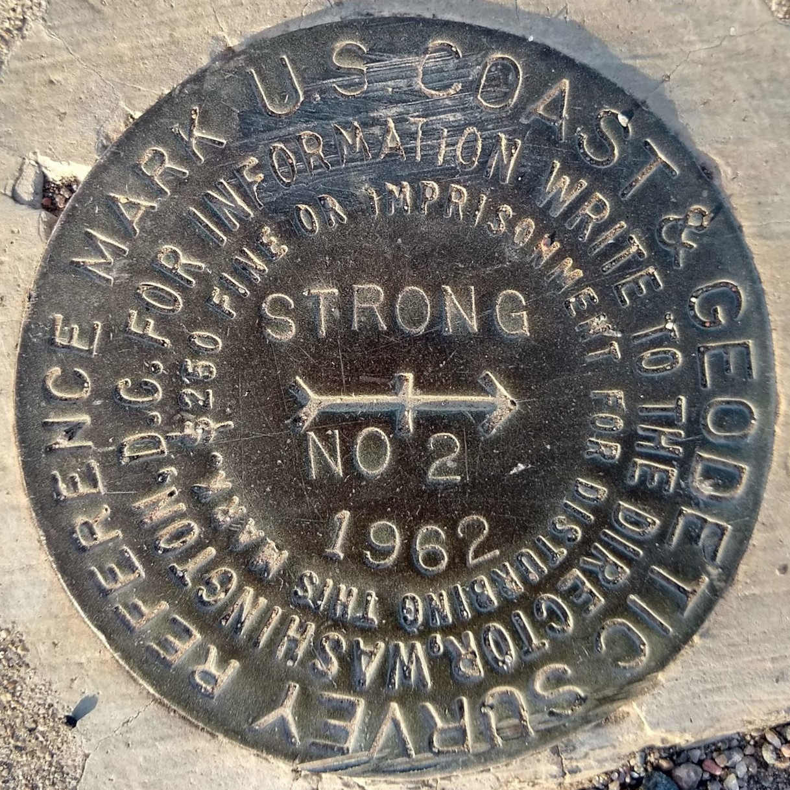
STRONG NO 2 - DV0651
STRONG NO 2" is a benchmark monumented by the USC&GS in 1962 located in Maricopa County, Arizona. It is a deticated reference mark for STRONG.

BIG WASH RESET - AA7441
"BIG WASH RESET" is a benchmark monumented by the USC&GS in 1977 located in Pima County, Arizona. It has 4 deticated reference marks, 3 of which have been destroyed, and a deticated azimuth, which has also been destroyed. Originally, the benchmark was set in 1936.

BIG WASH NO. 3 - CZ0316
"BIG WASH NO. 3" is a benchmark monumented by the USC&GS in 1936 located in Pima County, Arizona. It is a deticated reference mark for BIG WASH RESET.

T20S R17E S24 S25 T20S R18E S19 SC
"T20S R17E S24 S25 T20S R18E S19 SC" is a benchmark monumented by the BLM in 1989 located in Santa Cruz County, Arizona.

NOGLS 2573
"NOGLS 2573" is a benchmark monumented by the USGS in 1904 located in Pima County, Arizona.
Datasheet (on trunk line 4 of page 2)

NOGLS 4534
"NOGLS 4534" is a benchmark monumented by the USGS in 1903 or 1904 located in Pima County, Arizona.
Datasheet (on pdf page 25, document page 24)

NOGLS 2596 RESET
"NOGLS 2596 RESET" is a benchmark monumented by the USGS on or within the year of September 4, 1974 located in Pima County, Arizona.
Datasheet (on pdf page 11)

NOGLS 2835 - CZ0122
"NOGLS 2835" is a benchmark monumented by the USGS in 1904 located in Pima County, Arizona.
Datasheet (on trunk line 4 of page 2)

NOGLS 4835
"NOGLS 4835" is a benchmark monumented by the USGS in 1903 or 1904 located in Pima County, Arizona.
Datasheet (on pdf page 25, document page 24)

NOGLS 3290
"NOGLS 3290" is a benchmark monumented by the USGS in 1903 or 1904 located in Pima County, Arizona.
Datasheet (on pdf page 5)
Old Datasheet (on pdf page 25, document page 24)

NOGLS 3653
"NOGLS 3653" is a benchmark monumented by the USGS in 1903 located in Pinal County, Arizona.
Datasheet (on pdf page 19, document page 18)

NOGLS 3531
"NOGLS 3531" is a benchmark monumented by the USGS in 1903 located in Pinal County, Arizona.
Datasheet (on pdf page 25, document page 24)

NOGLS 3721
"NOGLS 3721" is a benchmark monumented by the USGS in 1903 or 1904 located in Pima County, Arizona.
Datasheet (on pdf page 24, document page 23)

NOGLS 3891
"NOGLS 3891" is a benchmark monumented by the USGS in 1903 or 1904 located in Santa Cruz County, Arizona.
Datasheet (on pdf page 26, document page 25)

NOGLS 4632
"NOGLS 4632" is a benchmark monumented by the USGS in 1903 or 1904 located in Pima County, Arizona.
Datasheet (on pdf page 26, document page 25)

NOGLS 4040
"NOGLS 4040" is a benchmark monumented by the USGS in 1904 located in Pinal County, Arizona.
Datasheet (on pdf page 18, document page 18)

NOGLS 1899 - CZ0360
"NOGLS 1899" is a benchmark monumented by the USGS in 1903 located in Pima County, Arizona.
Datasheet (on pdf page 11)
Old Datasheet (on pdf page 12, document page 11)
Benchmark Description Photographs

NOGLS 1940 - CZ0374
"NOGLS 1940" is a benchmark monumented by the USGS in 1903 located in Pima County, Arizona.
Datasheet (on pdf page 11)
Old Datasheet (on pdf page 12, document page 11)
Benchmark Description Photographs
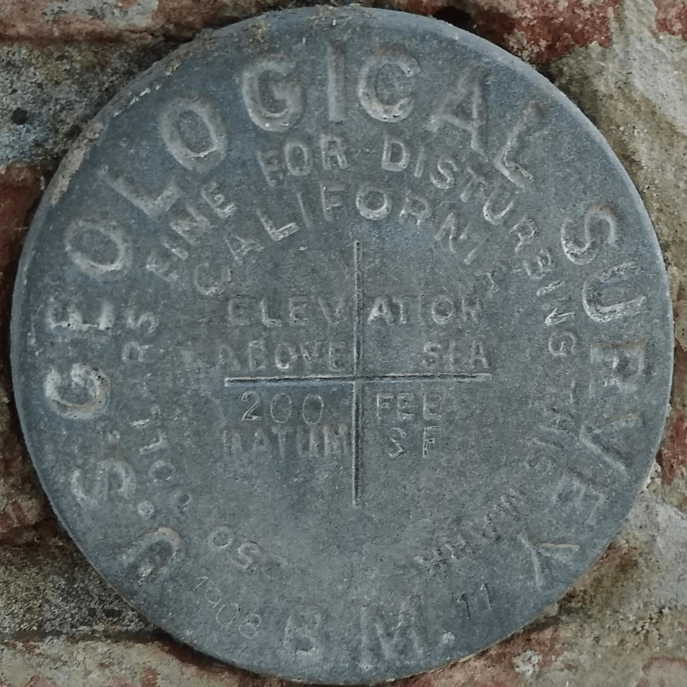
SF 200 - HS2722
"SF 200" is a benchmark monumented by the USGS in 1908 located in Santa Barbra, California.
Old Datasheet (on pdf page 609, document page 551)

LA 43 - EW3774
"LA 43" is a benchmark monumented by the USGS in 1901 located in Santa Barbra, California.
Old Datasheet (on pdf page 170, document page 154)
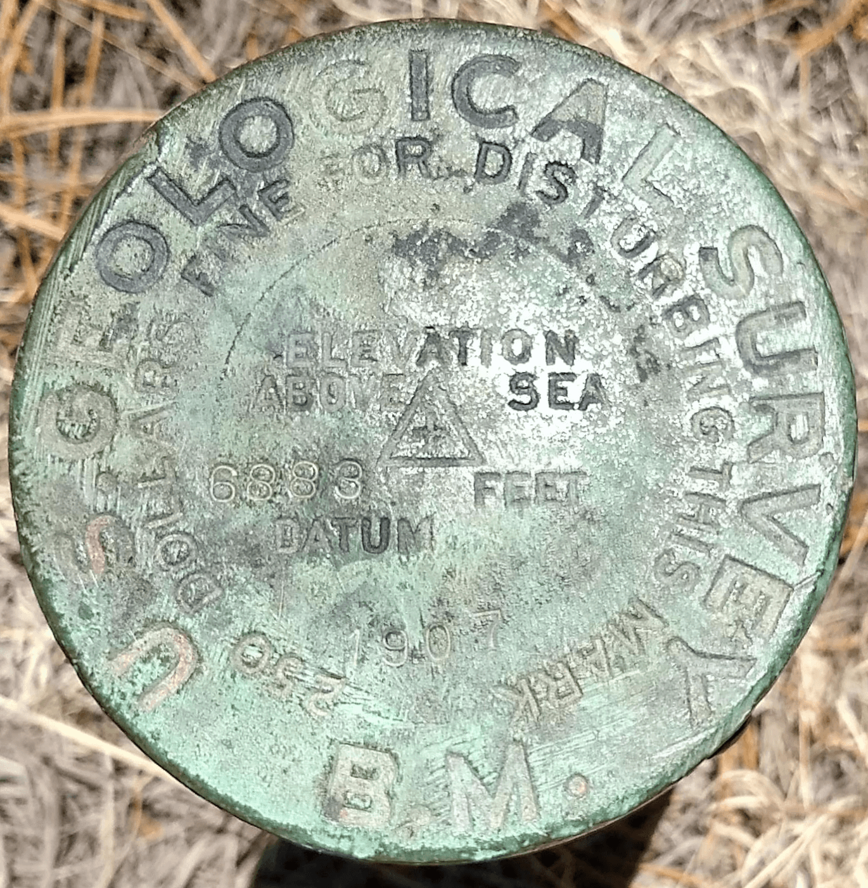
6883
"6883" is a benchmark monumented by the USGS in 1907 located in Coconino County, Arizona.
Datasheet (on doc page 76, pdf page 77)

E 3 - FQ0230
"E 3" is a benchmark monumented by the USC&GS in 1909 located in Coconino County, Arizona.
"Y 18" is a benchmark monumented by the USC&GS in 1933 located in Pinal County, Arizona.

A 77 - CG0315
"A 77" is a benchmark monumented by the USC&GS in 1934 located in Santa Cruz County, Arizona.

F 77 - CG0322
"F 77" is a benchmark monumented by the USC&GS in 1934 located in Santa Cruz County, Arizona.
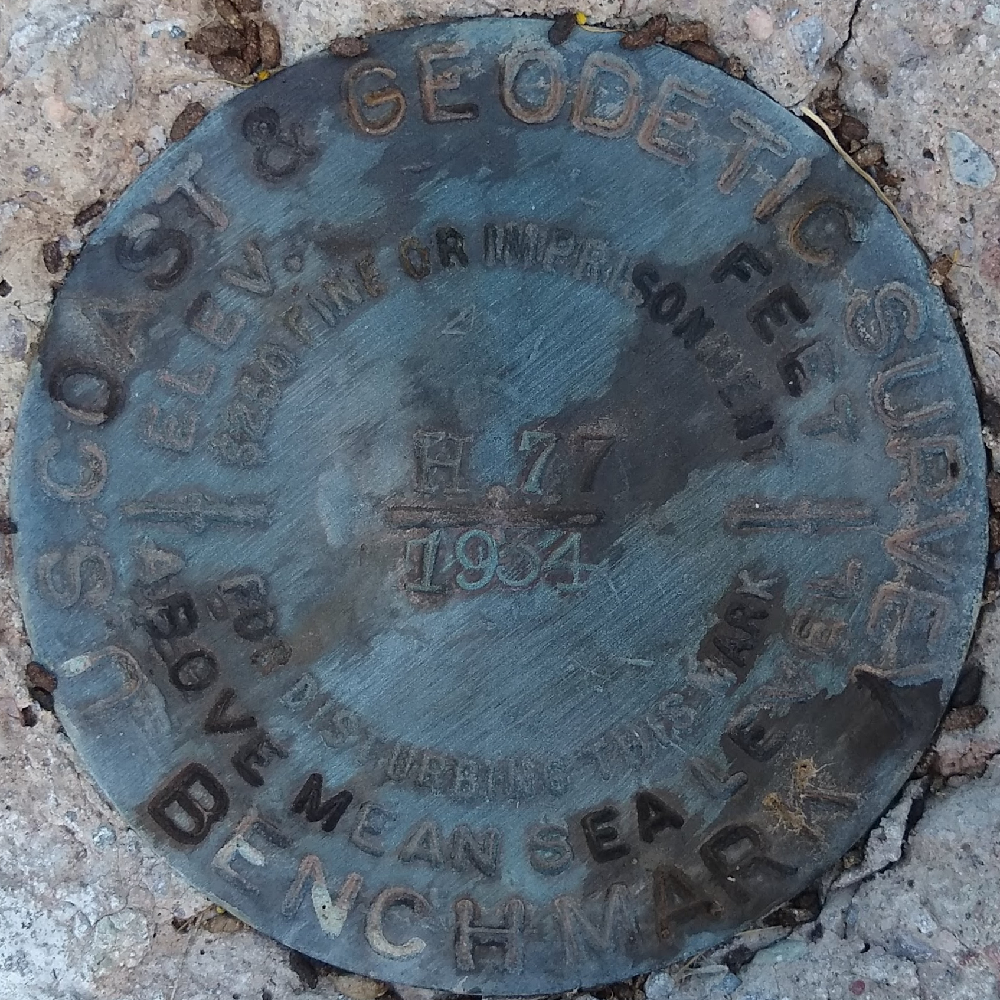
H 77 - CG0325
"H 77" is a benchmark monumented by the USC&GS in 1934 located in Santa Cruz County, Arizona.
"HIGHWAY" is a benchmark monumented by the USGS in 1946 located in Pinal County, Arizona. It has 2 deticated reference marks.

HIGHWAY NO 1 - CC6671
"HIGHWAY NO 1" is a benchmark monumented by the USGS in 1946 located in Pinal County, Arizona. It is a deticated reference mark for HIGHWAY.
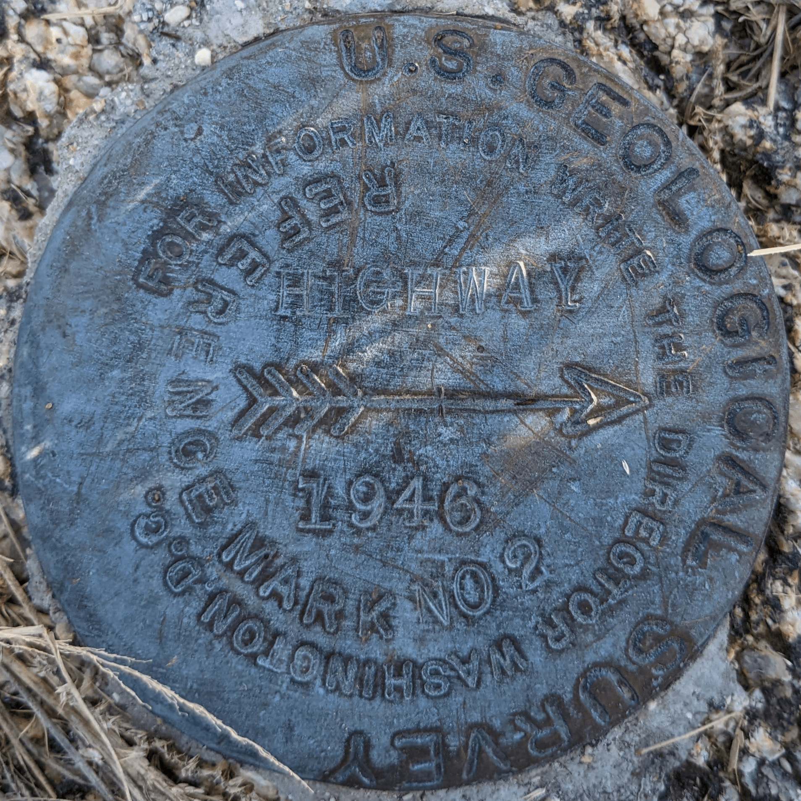
HIGHWAY NO 2 - CC6672
"HIGHWAY NO 2" is a benchmark monumented by the USGS in 1946 located in Pinal County, Arizona. It is a deticated reference mark for HIGHWAY.

GRISWOLD - CZ1956
"GRISWOLD" is a benchmark monumented by the USC&GS in 1971 located in Pima County, Arizona. It has 3 deticated reference marks, 1 of which have been destroyed, and a non-deticated azimuth, which has also been destroyed.

GRISWOLD NO 2 - CH5263
"GRISWOLD NO 2" is a benchmark monumented by the USC&GS in 1972 located in Pima County, Arizona. It is a deticated reference mark for GRISWOLD.

GRISWOLD RM A - CZ1957
"GRISWOLD RM A" is a benchmark monumented by the USC&GS in 1972 located in Pima County, Arizona. It is a deticated reference mark for GRISWOLD.
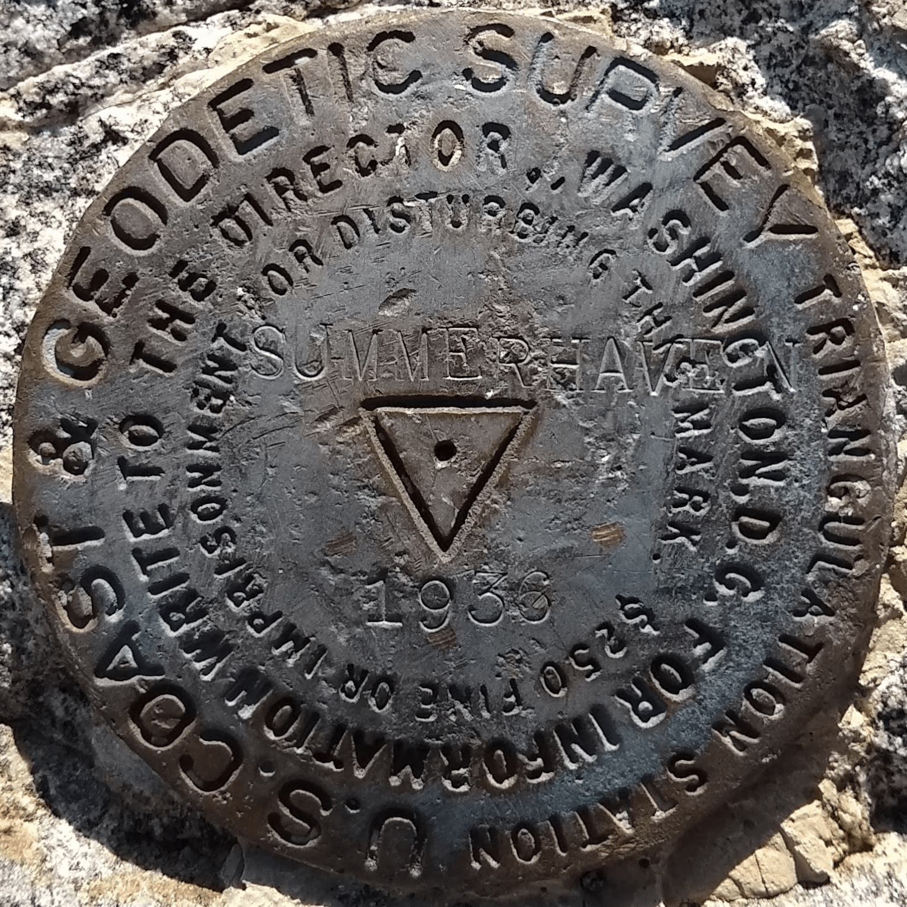
SUMMERHAVEN - CZ1857
"SUMMERHAVEN" is a benchmark monumented by the USC&GS in 1936 located in Pima County, Arizona. It has 2 deticated reference marks and a deticated azimuth, which has likely destroyed.

SUMMERHAVEN NO 1 - CC8320
"SUMMERHAVEN NO 1" is a benchmark monumented by the USC&GS in 1936 located in Pima County, Arizona. It is a deticated reference mark for SUMMERHAVEN.

SUMMERHAVEN NO 2 - CC8321
"SUMMERHAVEN NO 2" is a benchmark monumented by the USC&GS in 1936 located in Pima County, Arizona. It is a deticated reference mark for SUMMERHAVEN.
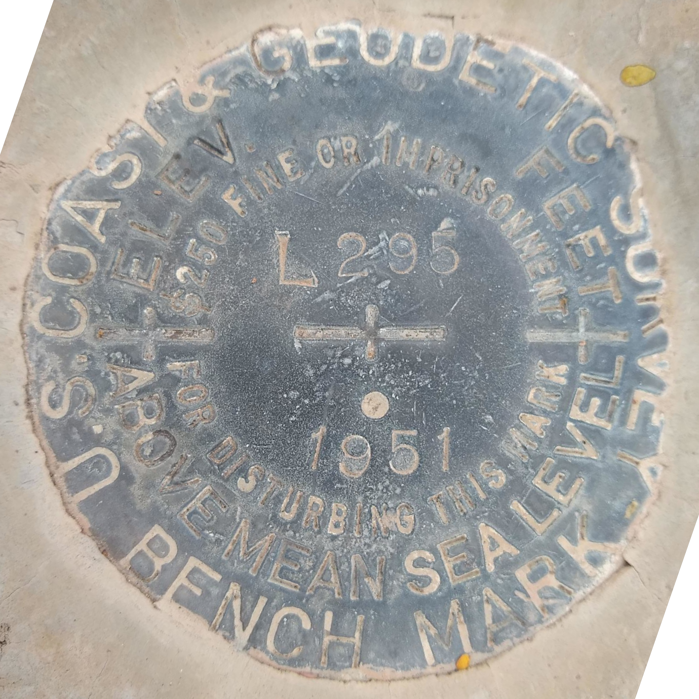
L 295 - CZ0754
"L 295" is a benchmark monumented by the USC&GS in 1951 located in Pima County, Arizona.

L 424 - CZ1453
"L 424" is a benchmark monumented by the USC&GS in 1980 located in Pima County, Arizona.

L 112 - CZ0729
"L 112" is a benchmark monumented by the USC&GS in 1935 located in Pima County, Arizona.

M 19 - CZ0124
"M 19" is a benchmark monumented by the USC&GS in 1933 located in Pima County, Arizona.
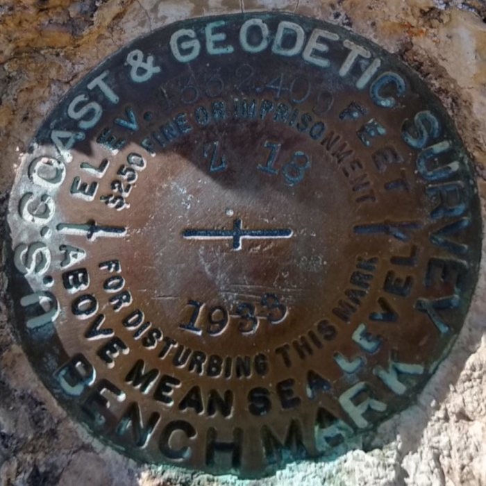
Z 18 - CZ0301
"Z 18" is a benchmark monumented by the USC&GS in 1933 located in Pinal County, Arizona.

B 19 - CZ0304
"B 19" is a benchmark monumented by the USC&GS in 1933 located in Pinal County, Arizona.